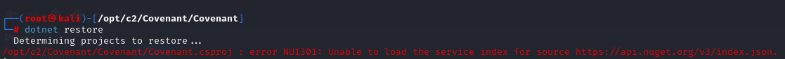

Section 0: Introduction
In this guide, I'll show you how to set up Covenant C2 and establish your first listener in under an hour.
Why am I writing this? My initial experience with configuring .NET and installing dependencies offline turned out to be more time-consuming than necessary. That being said, my mission is to spare you this hassle and provide a no-nonsense, straightforward tutorial to streamline your setup process.
As my focus will be to show you what to look out for when installing offline, I'll also walk through setting up on a Kali machine with internet access.
As a final note, I'll admit I am still new to red teaming, so I've designed this guide for those who are also absolute beginners and new to command and control (C2) tools.
Section 1: Technology Overview
Description: Covenant C2 is a command and control (C2) post-exploitation framework. As of mid-September 2019, Covenant is considered one of the latest and advanced frameworks in this area.
Prerequisites: Compatible with Windows 10 workstations, recent Windows Server OS, or Linux distributions supporting .NET Core. Required applications: GIT and .NET Core 2.2 SDK.
Installation Process: Covenant uses a modern, cross-platform architecture and does not come with a traditional installer. Installation involves cloning the project git repository and building and running the application.
Section 2.a: Online Installation
Below are the steps illustrated in Covenant C2's official documentation.
Starting from your Kali machine, you can clone and cd into your new Covenant package.
git clone --recurse-submodules https://github.com/cobbr/Covenant
cd Covenant/CovenantBefore you build the Covenant project, you'll run as root user and update the dotnet system global variant.
If you don't add this rule to the zsh script, you'll receive a "Couldn't find a valid ICU package installed on the system".
This typically occurs in Dotnet Core projects or packaged Dotnet Core binaries running on Ubuntu due to a missing dependency for Unicode and Globalization support.
sudo su
vim ~/.zshrcdotnet build
dotnet runYou should now see that your Covenant dashboard has been activated and at https://{local_ip}:7443.
This concludes the online installation and you are ready to explore the dashboard in Section 3!
Section 2.b: Offline Kali Installation
On an online Windows/Mac/Linux machine, run the following commands and save to a zipped folder.
Once you copy your zipped file over to your Kali machine, extract and CD into your Covenant folder.
If you try to 'dotnet build' your project you'll encounter this error:
This is where I had trouble with dependencies. .NET is trying to reach out to the internet and download its required Nuget dependencies.
The dependencies you will need can be downloaded here.
Once you download these to your online Windows/Mac/Linux, copy them over to Linux and upload them here.
In covenant, you'll now make two configurations to the nuget.config file.
dotnet build
dotnet runThis concludes the offline installation and you are ready to start your first listener in Section 3!
Section 3: Covenant Dashboard Basics
So once you verify that Covenant is running, let's talk about the dashboard.
The dashboard is divided into three main sections: Grunts, Listeners, and Tasks.
Grunts are the agents controlled by the Covenant framework, designed to execute tasks and payloads on compromised hosts, reporting back to the Covenant server.
Listeners are the endpoints that Grunts connect to. Listeners are responsible for receiving Grunt connections, authenticating them, and relaying commands and responses between the Grunt and the Covenant server.
Tasks are the actions that Grunts can perform. Tasks are executed on Grunts and can be used to perform actions on the host, such as executing a shell command, uploading a file, or executing a Covenant script.
Section 4: Setting Up Your First Listener
Content to be added